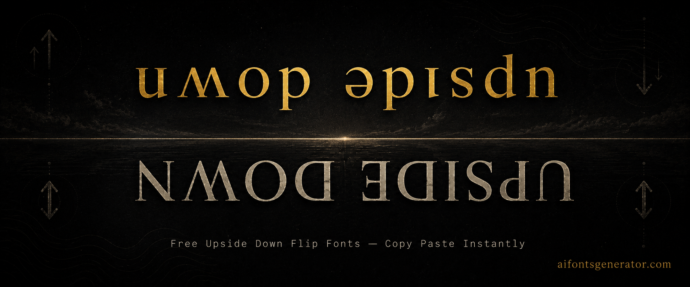

Upside Down Text Generator — Free Unicode Fonts
Flip your text upside down for any platform. Type your text above, scroll through the styles, and click to copy. No download needed.
What Is a Upside Down Text Generator?
Upside down text flips your text so each character appears rotated 180 degrees. The upside down text generator maps standard letters to Unicode characters that resemble their flipped versions, such as using the schwa character for a flipped e or an inverted a from the IPA Unicode block. The result reads as your original text but upside down and often reversed. It is a popular novelty style on Instagram captions and TikTok comments where the visual trick of readable-but-flipped text catches attention. WhatsApp users send flipped text messages as a running joke. The characters are all Unicode, so the flipped text pastes into any standard text field without special fonts.
How to Use This Upside Down Text Generator
Type your text into the input field. The upside down text generator flips each character to its Unicode equivalent immediately. Copy the flipped output and paste it into Instagram, TikTok, WhatsApp, or wherever you need it. The text will appear upside down and reversed on every device that reads it. No font is needed. The flipped characters are standard Unicode and render correctly across all modern devices and platforms.
Upside Down Text Generator for Instagram
Upside down text in Instagram captions reads as playful and self-aware. A caption written entirely upside down makes viewers tilt their heads or screenshot to read it, which increases engagement. It also works in Instagram bios as a single line or tagline that stands out by being different from all the normal-orientation text around it. The style is casual and light, better suited for entertainment or humor accounts than for professional or brand profiles.
Upside Down Text Generator for Discord
Upside down text in Discord messages is a common way to add visual humor to a conversation. Pasting flipped text in a server chat makes other members do a double take. It works in Discord bios as a standalone detail that reads as intentionally odd. In nickname fields, upside down text is recognizable and memorable, particularly in casual friend group servers or gaming communities where personality in names matters.
Upside Down Text Generator for Gaming
Upside down text sees limited use in serious gaming name fields because legibility matters there. The style works better in casual gaming communities on Discord or in TikTok usernames for gaming creators. Some mobile games do support the Unicode characters used for upside down text, so it is worth testing if you want a distinctive name. WhatsApp gaming group chats are another place where flipped text messages land as a running gag.
Platform Compatibility Guide
Instagram, TikTok, Discord, Twitter, and WhatsApp all support the Unicode characters used for upside down text. The flipped characters come from the International Phonetic Alphabet and other Unicode blocks that modern devices support by default. Facebook renders upside down text correctly in posts and comments. Most gaming platforms have inconsistent support for the IPA Unicode ranges, so upside down text in game name fields may display as boxes on some platforms. Test before committing to an in-game name.
Why Use Unicode Upside Down Text Generator?
Upside down text does not technically rotate characters. It maps each letter to an existing Unicode character that visually resembles the rotated version. For example, the letter p resembles an upside down d, and several IPA characters look like flipped versions of Latin letters. The generator finds the closest Unicode match for each character you type. Because these are real Unicode characters, they render on any device without a special font.
Frequently Asked Questions
How does upside down text actually work technically?
The generator maps each standard letter to a Unicode character that visually resembles its rotated version. These characters come from the International Phonetic Alphabet and other Unicode blocks. The text is not actually rotated. Each flipped-looking character is a real Unicode code point that your device already supports, which is why it displays correctly everywhere without a special font.
Does upside down text display correctly on Instagram?
Yes. Instagram supports the Unicode blocks used for upside down characters. Flipped text pastes into captions, bios, and comment fields and displays upside down on every device viewing the content. The effect works on both iOS and Android Instagram apps. It is one of the more consistent novelty Unicode styles across Instagram.
Can I use upside down text in WhatsApp messages?
Yes. WhatsApp renders the Unicode characters used for upside down text correctly on both iOS and Android. Paste the flipped text into a WhatsApp message or group chat and it appears upside down for everyone receiving the message. The characters are standard Unicode, so recipients do not need any special app version to see the effect.
More Font Style Generators
Looking for something different? Try these: